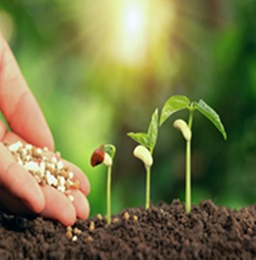

SEEDS

What is a Seed?
A seed is a tiny, embryonic plant enclosed in a protective outer covering. It contains all the genetic information necessary for growth and development into a new plant under suitable conditions1. In other words, seeds are like the “blueprints” for plants.
Types of Seeds:
Nucleus Seed:
Nucleus seeds are genetically and physically pure seeds produced by plant breeders who developed a specific variety without any impurities. These seeds are maintained in tight isolation by the institute that created the variety. There is no certification agency for nucleus seeds. The original variety’s vigor and viability must be preserved in the nucleus seed. After production, the responsible breeder usually issues a pedigree certificate2.
Breeder Seed:
Breeder seeds are the offspring of nucleus seeds. They are replicated over a larger area of the field under the direction of a plant breeder and monitored by a breeder seed monitoring committee. The production of foundation seeds ensures complete genetic and physical purity. The breeder seed is the initial seed in the multiplication generation system. It serves as the source for subsequent foundation seed production. The breeder seed tag includes essential information such as crop, variety, seed class, and producing institution2.
Foundation Seed:
Foundation seeds are produced from breeder seeds. They are the basis for further multiplication and distribution. Foundation seeds ensure genetic purity and uniformity. The producing agency issues a golden yellow marking for this category2.
Certified Seed:
Certified seeds are the final product available to farmers for sowing. They are produced from foundation seeds. Certified seeds meet specific quality standards and are certified by seed certification agencies
Fertilizers
Fertilizers are essential substances used by farmers to enhance crop productivity. They provide plants with the necessary nutrients required for growth. Here are the key points about fertilizers:
Types of Fertilizers:
Organic Fertilizers: These are natural fertilizers derived from plants and animals. They enrich the soil with organic matter, encourage microbial activity, and improve soil composition. Examples include agricultural waste, livestock manure, and industrial waste.
Inorganic Fertilizers: Also known as chemical fertilizers, these are generated through chemical processes. They contain specific nutrients needed for crop growth. Two common types are:
Nitrogen Fertilizers: These provide nitrogen, a crucial element for chlorophyll production, photosynthesis, and protein synthesis in plants.
Phosphorus Fertilizers: These supply phosphorus, essential for cell growth, root development, and overall plant health.
Advantages of Fertilizers:
Easy to Use: Fertilizers can be transported, stored, and applied conveniently.
Nutrient-Specific: Farmers can choose specific fertilizers based on the nutrients needed.
Rapid Effect: Fertilizers quickly impact crop growth.
Increased Yield: They enhance crop productivity, providing more food for the population.
Predictable and Reliable: Farmers can rely on fertilizers for consistent results.
Disadvantages of Fertilizers:
Costly: Fertilizers can be expensive.
Toxic Ingredients: Some fertilizer components are harmful to skin and respiratory systems.